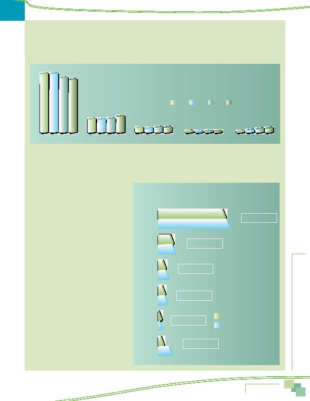

MWCOG-Comm
uter Conn
ecti
on
s-- 2010 State o
f th
e Comm
ute Report
5 7
Weekly Trips by Mode 2010, 2007, 2004, and 2001
Figure 50 presents mode shares as a percentage of weekly commute trips in 2010, 2007, 2004, and 2001. The comparison shows
that the share of drive alone trips appears to have declined since 2001, from 71.0% to 64.2%. Transit and Telecommute/CWS both
gained mode share since 2001. Transit use increased from 17.0% to 20.2% and Telecommute/CWS more than doubled, from 2.3% in
2001 to 6.3% in 2010. The carpool/vanpool and bike/walk mode shares have remained essentially constant.
Frequency of Current Mode Use
Figure 51 shows mode split for 2010 as the percentage of respondents who used each mode as their "primary" mode, defined as
the mode used most days per week. The figure also shows the percentages of respondents who used each mode one or more days per
week, that is, either regularly or occasionally.
Primary Mode
Nearly all (99%) respondents
said they used a single mode most days per week.
Since most respondents worked five or more days per
week, Primary Mode generally equated to use three
or more days per week. But for a small percentage of
respondents who worked fewer than five days or who
used more than two modes, the primary mode could
be used just two days per week.
As with mode split by weekly trips, the most
common Primary Mode was drive alone, used by 65%
of respondents. The second most common Primary
Mode, used by 15% of respondents, was train. Seven
percent said they primarily carpooled, "casual"
carpooled (slug), or vanpooled. Bus was the Primary
Mode of six percent of respondents. Two percent of
respondents said they primarily biked or walked and
four percent said they primarily telecommuted.
Primary or Secondary Use of Modes
Figure 51 also shows the percentage of respondents
who used the modes as
either their Primary or
Secondary mode. This category also includes
respondents who said they used these modes
occasionally, one or two times during the week.
The relative use of modes did not change from
the primary mode order. But the percentages of
respondents using each mode increased, because
respondents who reported a Secondary Mode were
counted in both their primary and secondary mode
categories.
64.2%
Figure 50
Weekly Trips by Mode 2001, 2004, 2007, and 2010
(Including telecommute and compressed schedules)
2001
Drive alone
Transit
Bike/Walk
71.0%
20.2%
17.0%
7.0%
Carpool/Vanpool
7.4%
2.3%
2.3%
6.3%
TC/CWS
2.3%
2004
2007
2010
Figure 51
Primary Modes and Modes Used as Primary or Secondary
Drive Alone
Train
Bus
Bike/Walk
TC
Primary Mode
Primary or Secondary Mode
+4% secondary
65%
69%
15%
16%
7%
8%
6%
7%
2%
3%
4%
12%
+1% secondary
+1% secondary
+1% secondary
+1% secondary
+8% secondary
Carpool/
Vanpool
Commute Patterns